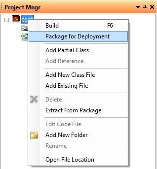
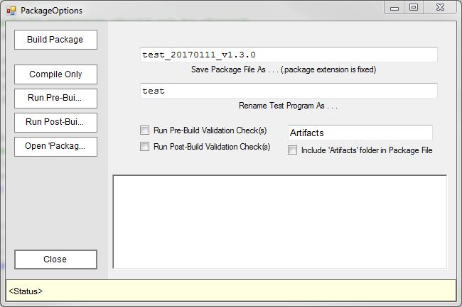
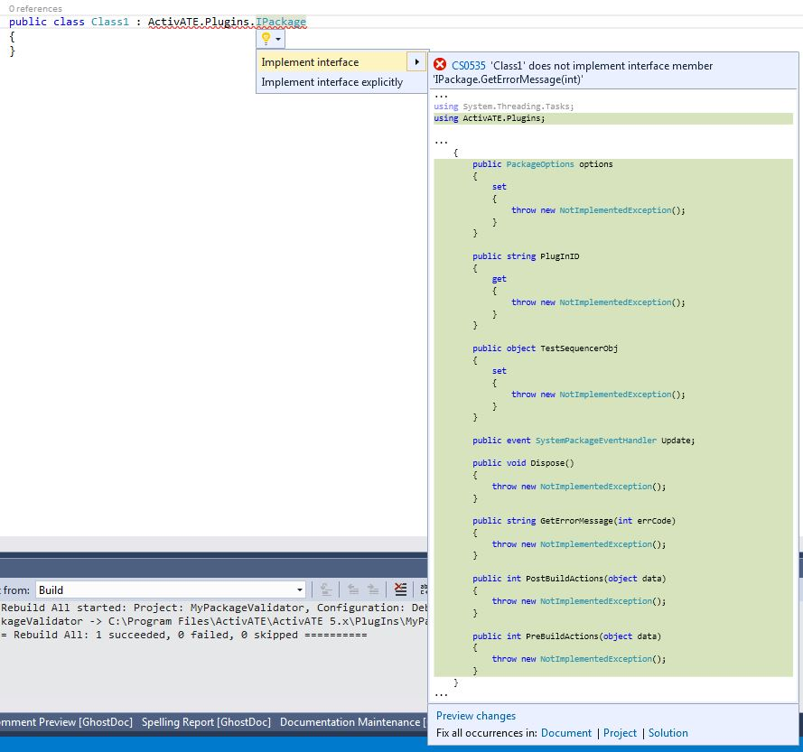
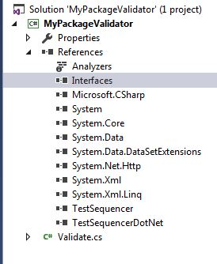
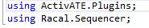
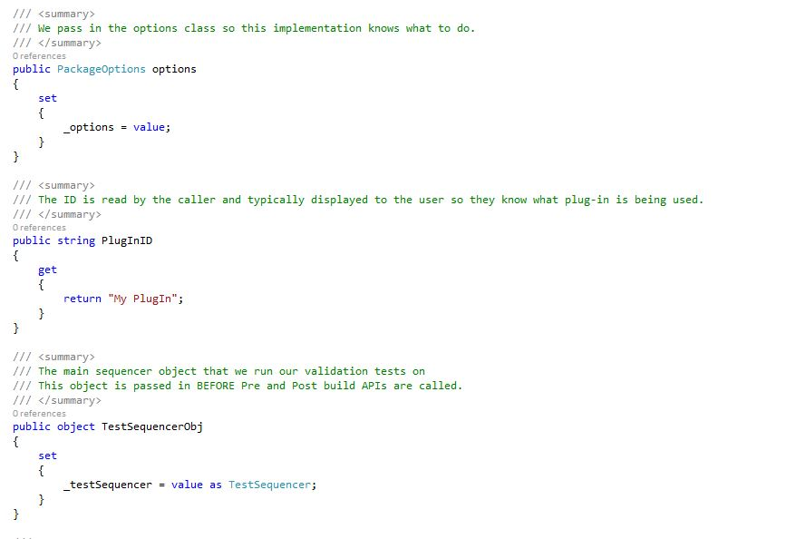
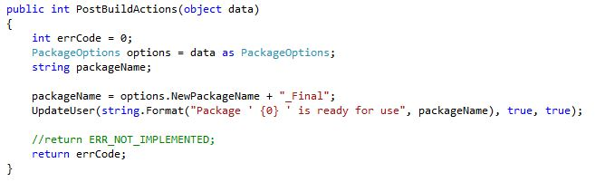
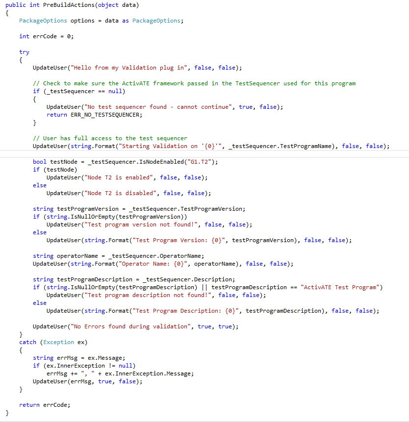
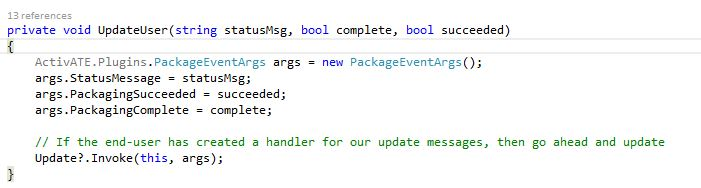
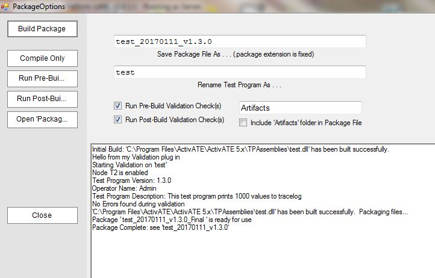

Beginning in ActivATE version 5.8.0.4, support for user-defined plugins is an included feature. This guide will go over creating plugins for use with the Package Options in ActivATE, which allows users to validate a package file and test program. The images below show how to get to the Package Options window, which is accessed when a test program is open by right clicking on the test program sequence file in the Project Mngr and selecting Package for Deployment.
Right click on your test sequence file that appears in the Project Mngr and select Package for Depolyment:
After following the above instructions, the Package Options window appears. This is what user-defined plugins will affect, specifically the pre and post build checks:
In your plugin's project, you'll need to add a class that inherits from and implements the IPackage interface:
In addition, ensure that Interaces.dll, TestSequencer.dll, and TestSequencerDotNet.dll are added to your plugin's project references as seen in the image below. These assemblies can be be found in the ActivATE runtime directory (usually C:\Program Files\ActivATE\ActivATE 5.x).
Also, make sure to add the namespaces see below. The Sequencer namespace contains the TestSequencer class, while the Plugins namespace is needed for the IPackage interface.
Below are samples of code for each portion of the IPackage interface implementation:
  Calls to the UpdateUser method below will print the results to the PackageOptions window. Note the PackageEventArgs object.
Final result of the above plugin's code is seen below after pressing the Build Package button. Note the information obtained during pre/post build actions, such as whether or not a node is enabled, the operator type/name, test program version, the renaming of the package file, etc.
Astronics Test Systems
Last updated on 1/11/2017 C. Colome